This project aims to build a machine learning model that predicts the quality of red wine based on its physicochemical properties. By analyzing various chemical components like acidity, sugar, and alcohol content, the model learns to assign a quality score (from 3 to 8). This kind of predictive model can be incredibly useful for winemakers to monitor and ensure consistent product quality.
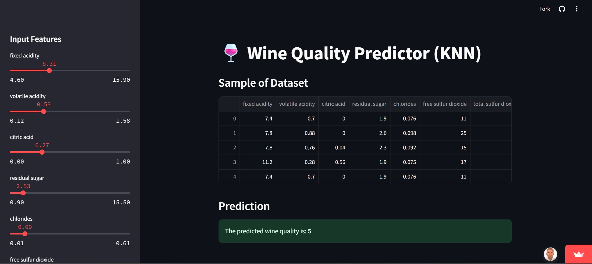
We start with a dataset containing information about various red wines, including their chemical properties (like fixed acidity, volatile acidity, citric acid, etc.) and their quality ratings. This dataset acts as our "knowledge base" for the model to learn from.
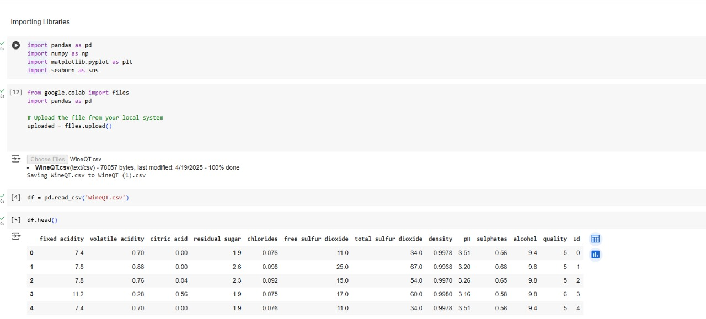
Raw data isn't always ready for a machine learning model. This step involves cleaning and transforming the data so the model can understand it better.
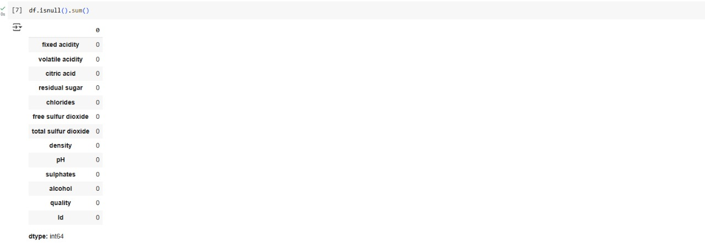
EDA is a crucial initial step in any machine learning project. Before building the prediction model, I thoroughly explored the dataset:
These insights guided the data cleaning and feature scaling process, improving model performance.
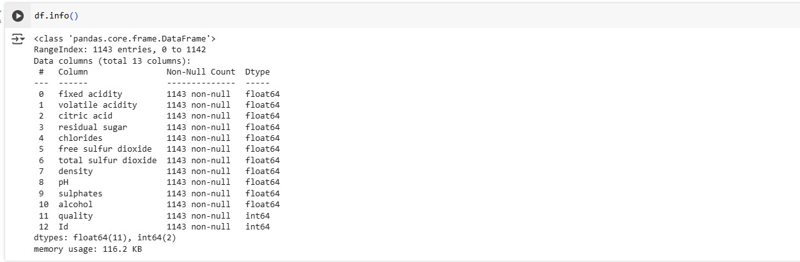
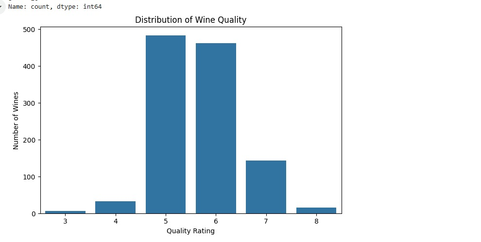
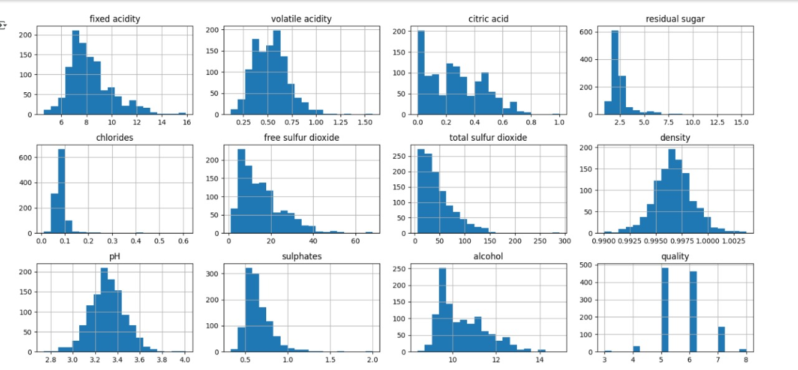
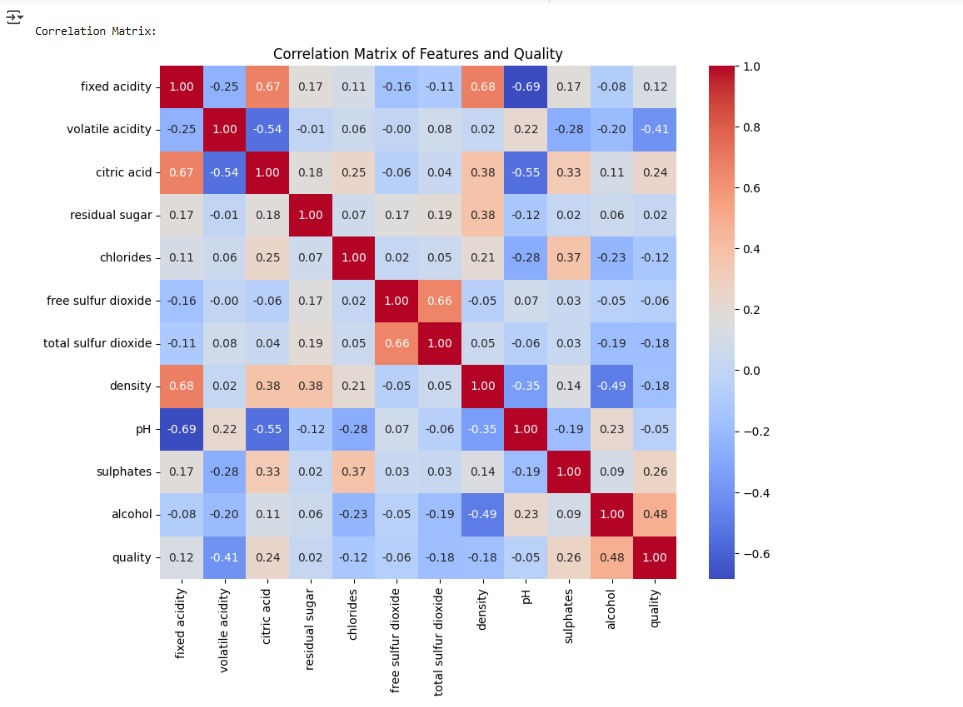
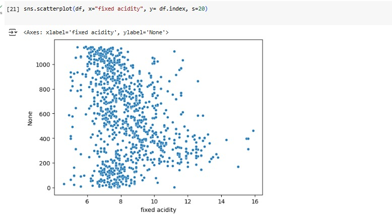
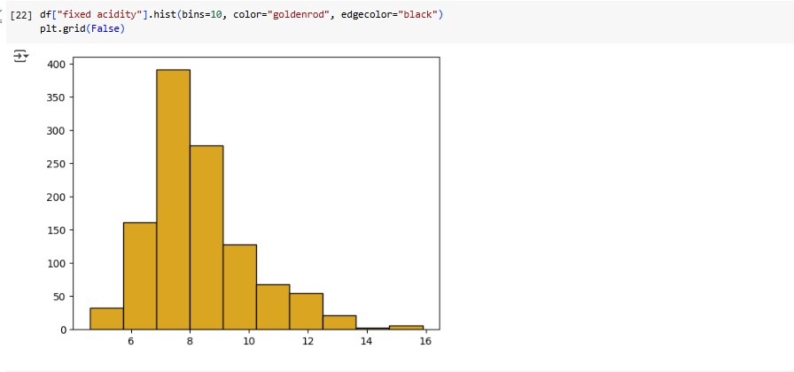
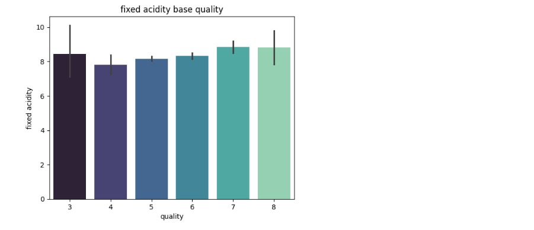
After EDA, I split the dataset into:
Then, the dataset was divided into training and testing sets (typically 80/20) to evaluate model performance on unseen data.
To ensure fairness among features, I used feature scaling. This was especially important for models like K-Nearest Neighbors (KNN), which are sensitive to feature magnitudes.
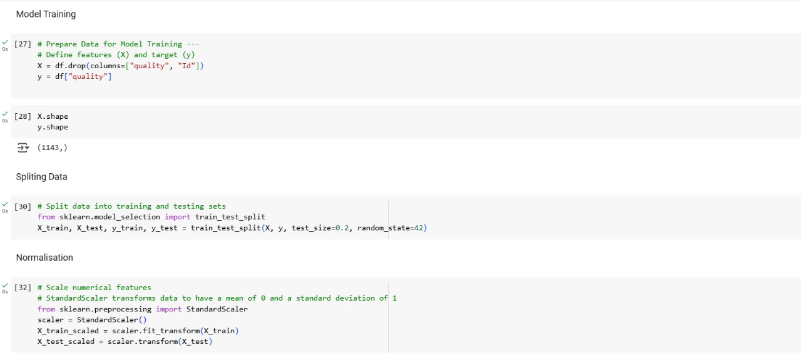
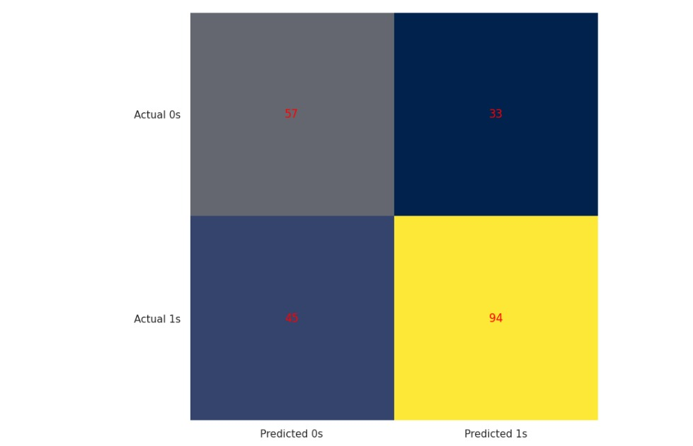
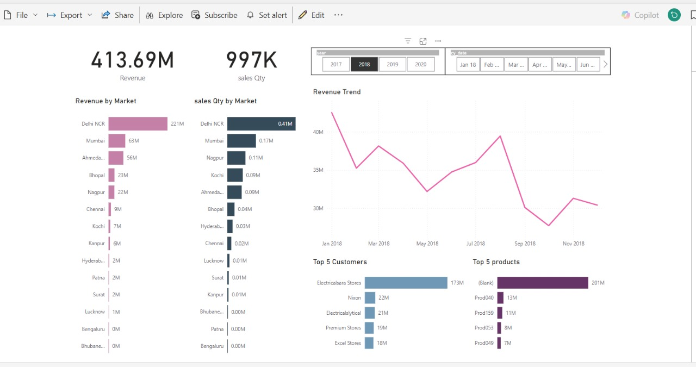
Tool: Microsoft Power BI
Category: Data Analytics & Visualization
This interactive dashboard was built to analyze and present sales and revenue performance data in a clear, dynamic, and business-friendly format. It allows users to explore sales trends over time, evaluate regional and product-level performance, and derive actionable insights for better decision-making.
The project simulates a real-world business case where stakeholders need an efficient tool to monitor KPIs and understand market behavior in real time.
This dashboard demonstrates my ability to:
It's designed for business leaders, data analysts, and decision-makers who need clear insights from complex data.
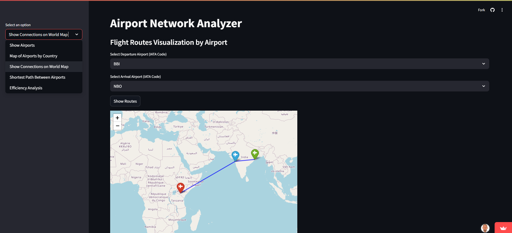
This project visualizes and analyzes global airport connections using network analysis, interactive maps, and routing algorithms. It helps users explore airports by country, view route connections, find shortest paths between airports, and measure the efficiency of the air transport network.
| Tool | Purpose |
|---|---|
| Python | Core programming language |
| Pandas | Data handling and analysis |
| NetworkX | Graph/network algorithms |
| GeoPandas | Spatial/geographic data |
| Folium | Interactive maps |
| Streamlit | Web app interface |
| Matplotlib & Seaborn | Data visualization |
| Shapefiles (.shp) | Country boundaries for plotting world maps |
The project uses four CSV files from OpenFlights:
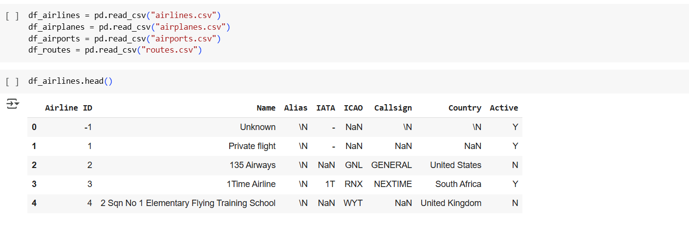
The app uses st.sidebar.selectbox() to let users switch between functionalities like:
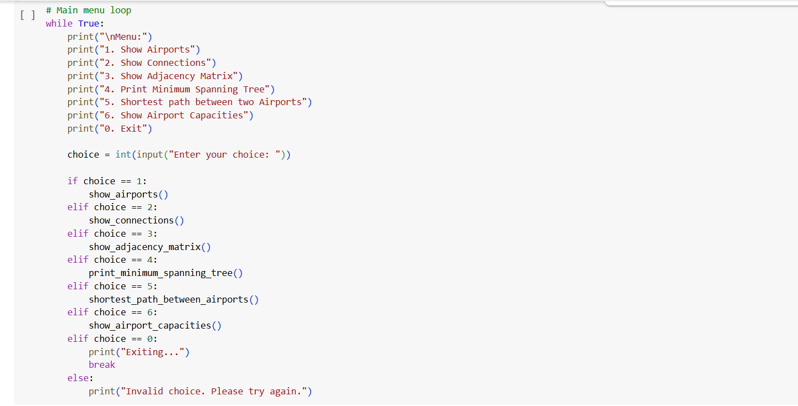
Shows all airports sorted by country, with name and city. A simple but helpful view for initial exploration.
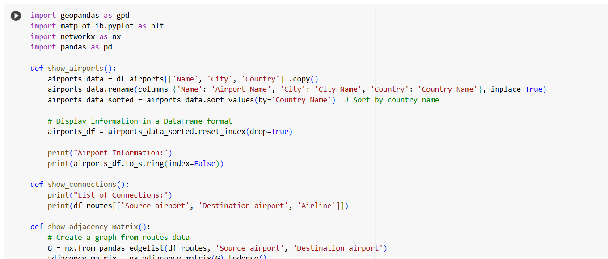
Uses Folium and MarkerCluster to display all airports in a selected country on an interactive map.
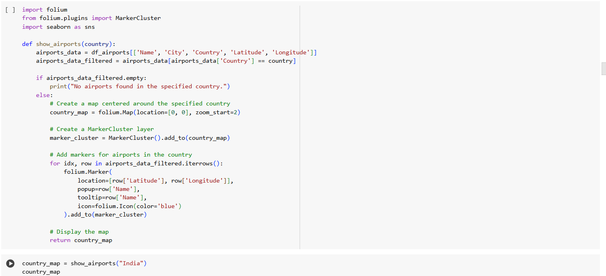
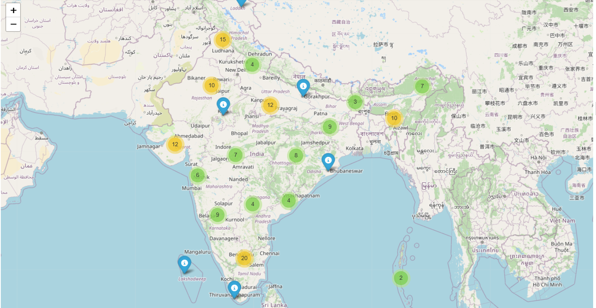
This function uses matplotlib + geopandas to draw air routes as lines on a world map.
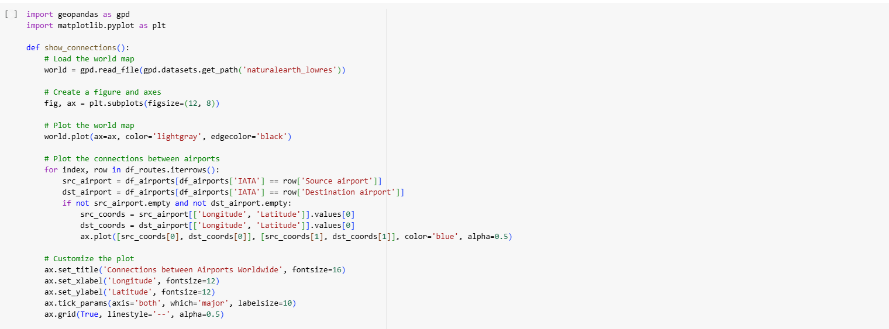
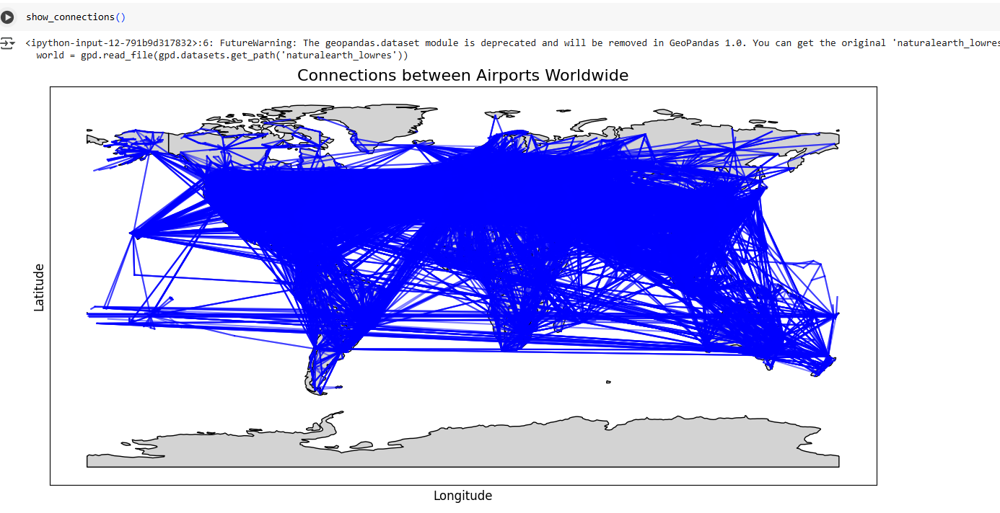
This part uses Dijkstra's Algorithm to find the shortest route between two airports based on route connections.
Airports are treated as nodes, and flight paths as edges in a network. This simulates airline route planning and optimizes travel paths.
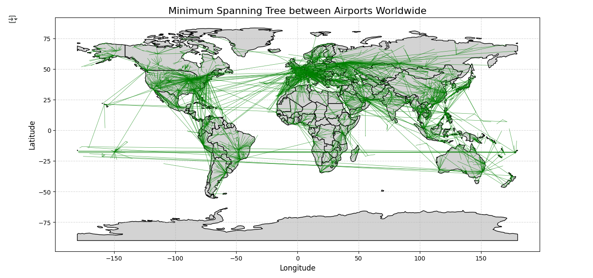
Compares execution time for:
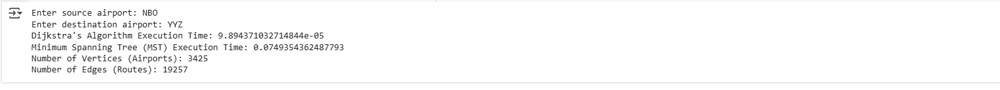